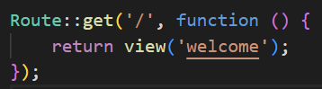

Laravel introduction
Read documentation and then:
Write command used for creating new laravel project:Configuration
The .env file in Laravel is an environment configuration file that stores sensitive information, such as database credentials, API keys, and other settings. It allows Laravel to separate configuration from code, making the application more secure and easier to manage across different environments (development, testing, production).
By default, Laravel provides a sample environment file called .env.example. When setting up a project, you should copy this file to create your own .env file. Below are the basic configuraiton options:
APP_NAME=Laravel
APP_ENV=local # Can be: local, production, testing
APP_KEY=base64:... # Security key (generated with `php artisan key:generate`)
APP_DEBUG=true # Show errors (true) or hide them (false)
APP_URL=http://localhost
DB_CONNECTION=mysql # connections are defined in config/database.php
DB_HOST=127.0.0.1 # 127.0.0.1 is equal to localhost
DB_PORT=3306 # default mysql port
DB_DATABASE=my_database # name of database
DB_USERNAME=root # default root password
DB_PASSWORD= # by default password for root is '' in xampp mysql database
Next we need to create database and create tables. Laravel use migrations to manage and version-control database schema using PHP code instead of raw SQL. Migrations allow developers to create, modify, and delete database tables in a structured and repeatable way. By default all migrations are placed in `migrations` folder. At the start there are 3 basic migrations:
- create_users_table - This migration defines the structure of the users table, which is typically used to store user-related data (such as authentication credentials and profile details).
- create_cache_table - migration is typically used to create a table in the database that will store cache data. Laravel allows various caching mechanisms, and one of the options is to store cached data in the database. The cache table is used when the cache configuration in Laravel is set to database.
- create_jobs_table - migration in Laravel is responsible for creating a table in the database that will store information about queued jobs. Laravel's queue system allows for deferring the processing of time-consuming tasks (like sending emails, processing images, etc.) to a later time, which is handled by queues. This migration is crucial when you use the database as a queue driver.
php artisan migrate
Running applicaiton
We can start application using `php artisan serve` command:
php artican serve # default port and host
php artisan serve --port=8080 # with specified port
php artisan serve --host=0.0.0.0 # with specified host
URL (uniform Resource Locator)
A URL is the address used to access resources on the web. It is a string that specifies the location of a resource (like a webpage, image, or file) and how to retrieve it. A typical URL consists of several components that work together to point to a specific location on the internet.
Here is an example of a URL:
https://www.example.com:8000/products?page=2#pricing
Name every part of the URL:
- https:// -
- www.example.com -
- :8000 -
- /products -
- ?page=2 -
- #pricing -
Http
Read article and create definition of HTTP. -How HTTP works
Create new folder and inside this folder create HTML document `httpdemo.html` wich contains simple HTML form with fields form name, surname and age.
Start php server inside this document
php -S localhost:8008
curl (short for Client URL) is a command-line tool and library used for transferring data to or from a server using various protocols like HTTP, HTTPS, FTP, FTPS, SCP, SFTP, LDAP, and others. It is widely used for making network requests in scripts, APIs, and command-line environments.
Use curl to send http request and see response in console
curl -v http://localhost:8008/httpdemo.html
Name components of HTTP request and shortly describe it.
HTTP request
HTTP response
Now lets look inside routes/web.php file. Here we have defined basic path '/'. When we type in the browser our server address and provide that path then this piece of code will be executed. `view('welcome')` render a view form default resources/view folder. The view is named welcome.blade.php as Laravel by default uses Blade to render views.
We can modify code and render Hello world for example on path greetings:
Route::get('/greetings', function () {
return "Hello world!";
});
We can create a route that handles multiple paths. For example any student id we provide.
Route::get('/check/{id}', function ($id) {
// Define the response based on the id
if ($id == 120321) {
return 'Jan Kowalski';
} elseif ($id == 23123) {
return 'Jan Nowak';
} else {
return 'Unknown student';
}
});
id parameter can be optional. By providing default value and mark id with `?` sign, path `/check` will be valid.
Route::get('/check/{id?}', function ($id = None) {
// Define the response based on the id
if ($id == 120321) {
return 'Jan Kowalski';
} elseif ($id == 23123) {
return 'Jan Nowak';
} elseif ($id == None) {
return 'Id is not provided';
} else{
return 'Unknown student'
}
});
We can also handle query string usin Request object. For example for http://localhost:8000/user?id=123&name=John we can specify this Route which will read query string values and return it.
use Illuminate\Http\Request; # Its important to import proper packages
Route::get('/user', function (Request $request) {
// Access query string parameters
$id = $request->query('id'); // Get the 'id' query string parameter
$name = $request->query('name'); // Get the 'name' query string parameter
return "User ID: $id, Name: $name";
});
Route order is important. If we define a route like `/{id}` before `/user`, the `/user` route will not be accessible because "user" will be treated as an {id} parameter.
Task 1
Develop a Laravel route that takes two numbers as parameters, performs division, and returns the result. The result's decimal precision can be customized using a query string parameter.
Ensure both parameters are numbers, otherwise return an error response (400 Bad Request).
Prevent division by zero, returning an error if num2 is 0.
Perform the division operation (num1 / num2).
Allow optional precision control via the query string (?precision=3).
Ensure precision is a non-negative integer (return an error if invalid).
You can make custom error pages in resource/views.